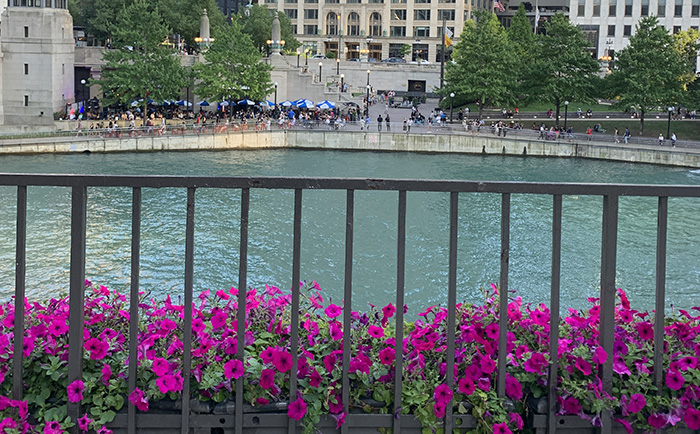
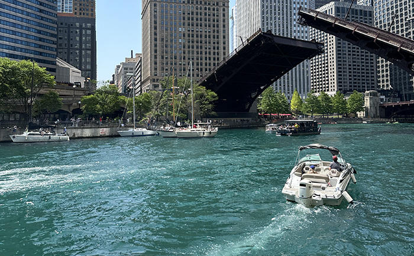
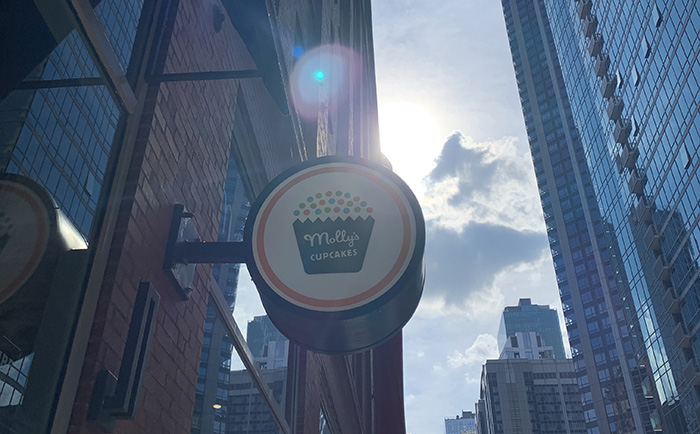

As someone who is from a suburb of Chicago, I grew up visiting the city, and it has inspired so many fond memories of mine. This photo gallery compiles photos I have taken from day trips to the city from 2021 to 2023 to showcase the city and places everyone should visit in Chicago. This is what a day exploring Chicago looks like, featuring some of the fun activities and attractions in the city.

The first thing you will see when exiting the Chicago Union Station is the towering skyscrapers, reaching for the heavens like hands, and the beautiful river walk (Briana Iordan, 2022).

When walking along the river walk, you will see numerous boats, canoes and kayaks gliding across the river. Chicago also offers many architecture boat tours for those seeking to learn more about the city’s architectural roots (Briana Iordan, 2023).
A must-see attraction in Chicago is the infamous and iconic Cloud Gate — more commonly known as "The Bean" — in Millennium Park (Briana Iordan, 2021).
Also in Millennium Park is no other than buildings with faces. These interactive video sculptures are known as the Crown Fountain (Briana Iordan, 2023).
On your journey, you will often stumble upon the occasional pair of ducks or even a flock of seagulls along the Navy Pier shore (Briana Iordan, 2023).
While exploring Navy Pier, don't forget to take a ride on the Centennial Wheel and witness the breathtaking views of the city from above (Briana Iordan, 2021).

It's not a trip to Chicago without stopping at Molly's Cupcakes — the winner of Cupcake Wars in 2009. My personal favorite is the s'mores cupcake! (Briana Iordan, 2021).
As the sun sets in the horizon, your day in Chicago comes to an end. Before heading back to Union Station, don't forget to stop by the Clarence F. Buckingham Memorial Fountain, one of the largest in the world (Briana Iordan, 2023).